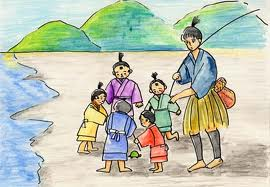
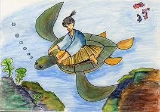
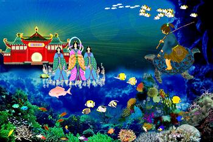
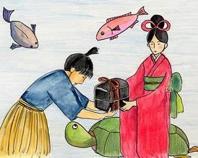
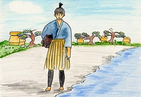

むかしむかし、ある村(むら)に、心のやさしい浦島太郎(うらしまたろう)という若者(わかもの)がいました。浦島(うらしま)さんが海辺(うみべ)を通りかかると、子どもたちが 大きなカメを捕(つか)まえていました。そばによって見てみると、子どもたちがみんなでカメをいじめています。見るとカメは涙(なみだ)をハラハラとこぼしながら、浦島(うらしま)さんを見つめています。
|  | |
| たろう | 「おやおや、かわいそうに、逃(に)がしておやりよ」 |
| こども | 「いやだよ。おらたちが、やっと捕まえたんだもの。どうしようと、おらたちの勝手(かって)だろ」 |
| たろう | 「それでは、このお金をあげるから、おじさんにカメを売(う)っておくれ」 |
| こども | 「うん、それならいいよ」 |
| たろう | 「カメさん、大丈夫(だいじょうぶ)かい？ もう、捕(つか)まるんじゃないよ」 |
さて、それから二、三日たったある日の事、浦島さんが海に出かけて魚(さかな)を釣(つ)っていると、「・・・浦島さん、・・・浦島さん」と、誰(だれ)かが呼(よ)ぶ声(こえ)がします。カメは浦島さんを背中に乗せて、海の中をずんずんともぐっていきました。海の中にはまっ青(さお)な光(ひかり)が差(さ)し込(こ)み、コンブがユラユラとゆれ、赤やピンクのサンゴの林(はやし)がどこまでも続(つづ)いています。
| たろう | 「おや？誰が呼んでいるのだろう？」 |  |
| かめ | 「わたしですよ。このあいだは助(たす)けていただいて、ありがとうございました。おかげで助かりました。ところで浦島さんは、竜宮(りゅうぐう)へ行った事(こと)がありますか？」 | |
| たろう | 「竜宮？ さあ？ 竜宮って、どこにあるんだい？」 | |
| かめ | 「海(うみ)の底(そこ)です。わたしがお連(つ)れしましょう。さあ、背中(せなか)へ乗(の)ってください」 |
浦島さんがウットリしていると、やがて立派(りっぱ)なご殿(てん)へ着(つ)きました。カメに案内(あんない)されるまま進(すす)んでいくと、この竜宮の主人(しゅじん)の美(うつく)しい乙姫(おとひめ)さまが、色とりどりの魚(さかな)たちと一緒(いっしょ)に浦島さんを 出迎(でむか)えてくれました。浦島さんは、竜宮の広間(ひろま)ヘ案内(あんない)されました。浦島さんが用意(ようい)された席(せき)に座(すわ)ると、魚たちが次(つぎ)から次へと素晴(すば)らしいごちそうを運(はこ)んできます。ふんわりと気持(きも)ちのよい音楽(おんがく)が流(なが)れて、タイやヒラメやクラゲたちの、それは見事(みごと)な踊(おど)りが続(つづ)きました。
|  | |
| おとひめ | 「ようこそ、浦島(うらしま)さん。わたしは、この竜宮(りゅうぐう)の主人(しゅじん)の乙姫(おとひめ)です。このあいだはカメを助けてくださって、ありがとうございます。お礼(れい)に、竜宮をご案内(あんない)します。どうぞ、ゆっくりしていってくださいね」 |
乙姫(おとひめ)さまに言われるまま竜宮(りゅうぐう)で過(す)ごすうちに、三年(さんねん)の月日(つきひ)がたってしまいました。ある時、浦島さんは、はっと思い出しました。(家族(かぞく)や友(とも)だちは、どうしているだろう？)そこで浦島さんは、乙姫(おとひめ)さまに言いました。
| たろう | 「乙姫さま、今までありがとうございます。ですが、もうそろそろ家(いえ)へ帰(かえ)らせていただきます」 |  |
| おとひめ | 「帰(かえ)られるのですか？ よろしければ、このままここで暮(くら)しては」 | |
| たろう | 「いいえ、わたしの帰(かえ)りを待(ま)つ者(もの)もおりますので」 | |
| おとひめ | 「・・・そうですか。それはおなごりおしいです。では、おみやげに玉手箱(たまてばこ)を 差(さ)し上(あ)げましょう。この中には、浦島(うらしま)さんが竜宮(りゅうぐう)で過(すご)ごされた『時(とき)』が入(はい)っております。これを開(あ)けずに持(も)っている限(かぎ)り、浦島さんは 年(とし)を取(と)りません。ずーっと、今(いま)の若(わか)い姿(すがた)のままでいられます。 ですが一度(いちど)開(あ)けてしまうと、今までの『時』が戻(もど)ってしまいますので、 決(けっ)して開(あ)けてはなりませんよ」 | |
| たろう | 「はい、わかりました。ありがとうございます」 |
乙姫さまと別(わか)れた浦島さんは、またカメに送(おく)られて地上(ちじょう)へ帰(かえ)りました。地上にもどった浦島さんは、まわりを見回(みまわ)してびっくり。確(たし)かにここは浦島さんが釣(つ)りをしていた場所(ばしょ)ですが、何だか様子が違(ちが)います。浦島さんの家はどこにも見あたりませんし、出会(であ)う人も知(し)らない人ばかりです。浦島さんが一人(ひとり)の老人(ろうじん)に尋(たず)ねてみました。
|  | |
| たろう | 「・・・あの、すみません。浦島の家を知りませんか？」 |
| ろうじん | 「浦島？・・・ああ、確(たし)か浦島という人なら五十年ほど前(まえ)に海へ出たきりで、 帰(かえ)らないそうですよ」 |
| たろう | 「えっ！五十年前。・・・竜宮の三年は、この世(よ)の五十年にあたるのだろうか・・・。家族(かぞく)も友(とも)だちも、みんな死(し)んでしまったのか・・・。」「そう言えば、乙姫(おとひめ)さまは言っていたな。この玉手箱を開(あ)けると、『時(とき)』が 戻(もど)ってしまうと。・・・もしかしてこれを開けると、自分(じぶん)が暮(く)らしていた時(とき)に 戻(もど)るのでは」 |
そう思(おも)った浦島さんは、開(あ)けてはいけないと言われていた玉手箱を開けてしまいました。 モクモクモク・・・。すると中から、まっ白(しろ)のけむりが出てきました。けむりの中に、竜宮(りゅうぐう)や美(うつく)しい乙姫(おとひめ)さまの姿(すがた)がうつりました。そして楽(たの)しかった竜宮での三年が、次から次へとうつし出されます。浦島さんは、喜(よろこ)びました。でも玉手箱から出てきたけむりは次第(しだい)に薄(うす)れていき、その場(ば)に残(のこ)ったのは髪(かみ)の毛(け)もひげもまっ白(しろ)の、ヨポヨポのおじいさんになった浦島さんだったのです。
| たろう | 「ああ、わたしは、竜宮へ戻(もど)ってきたんだ」 |